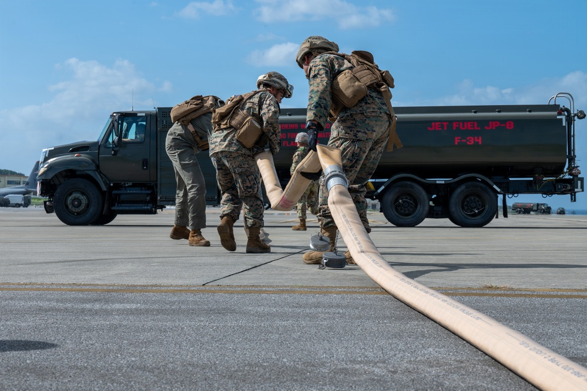

Senior Airman Melany Bermudez · DVIDS 10054521 · Public domain · A 6-inch collapsible fuel hose connects to an R-11 fuel truck during Exercise Beverly Sword 27-1, Kadena Air Base, Japan, Oct. 28, 2026.
DVIDS
Kadena Airmen and Marines stood up a joint fuel site and hot-pit refueled two F-22s
An 18th Wing release from Kadena Air Base says Airmen of the 18th Logistics Readiness Squadron and Marines of Marine Wing Support Squadron-172 built an above-ground fuel site on the airfield during Exercise Beverly Sword 27-1. The site extends R-11 truck capacity of 6,000 gallons to a Marine Corps 20,000-gallon bladder, then pumps fuel at 150 gallons a minute through an R-18 pump and an R-19 filter to two R-20 servicing platforms. Tech. Sgt. Nicholas Rockwell, the fuels NCO in charge, said the kits fit an MC-130J Commando II. The site was tested with a hot-pit refuel of two F-22 Raptors from the 525th Expeditionary Fighter Squadron, deployed from Joint Base Elmendorf-Richardson.
DVIDS · Read source →